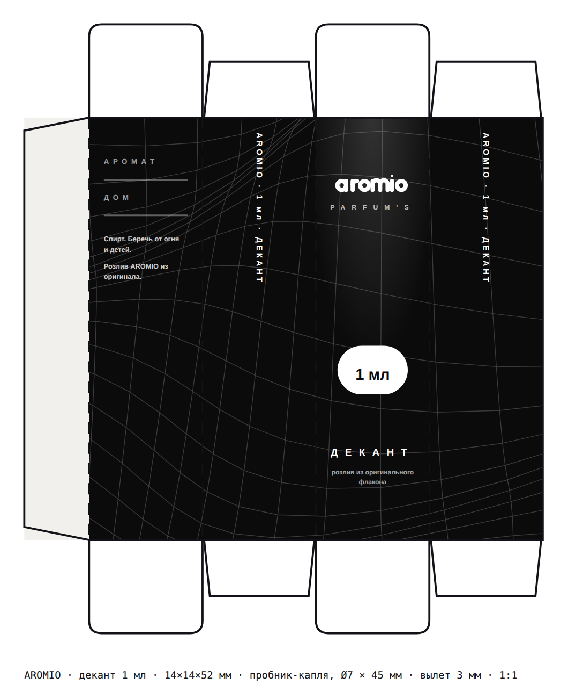
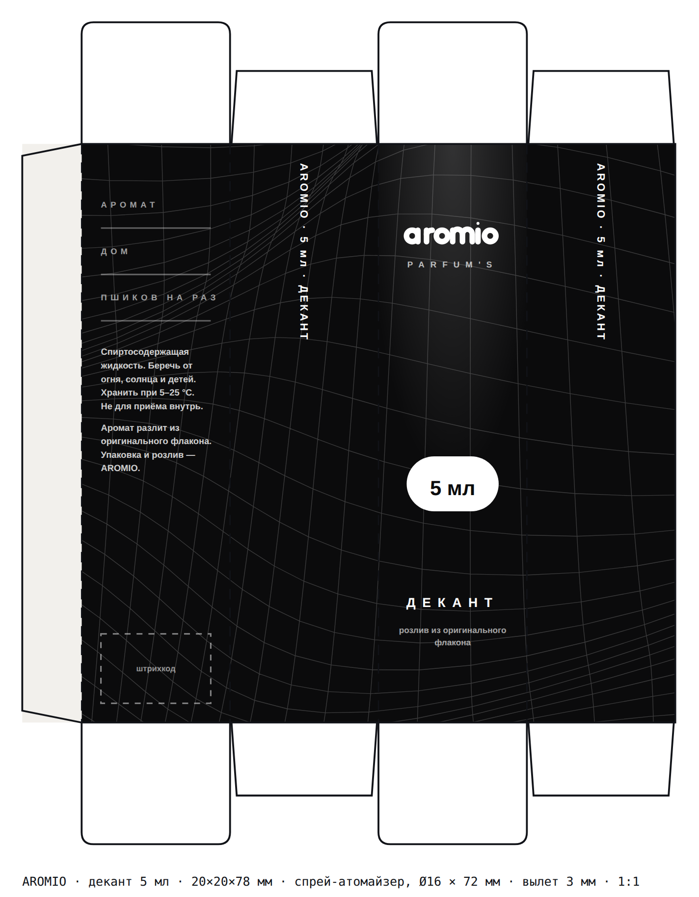
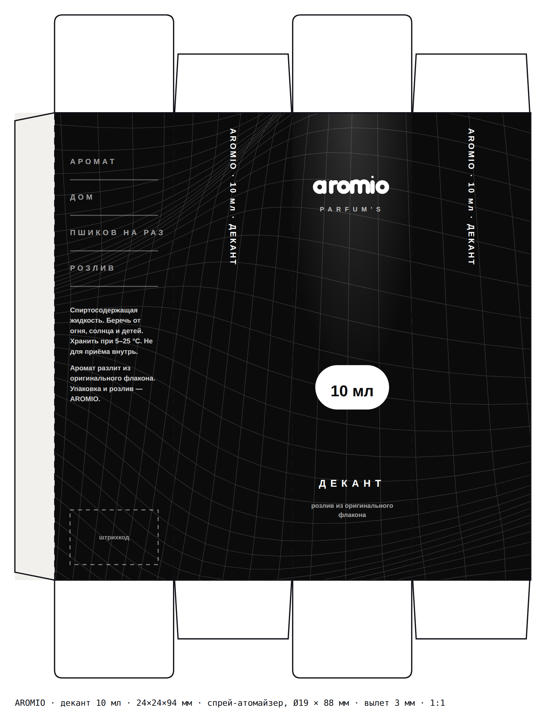
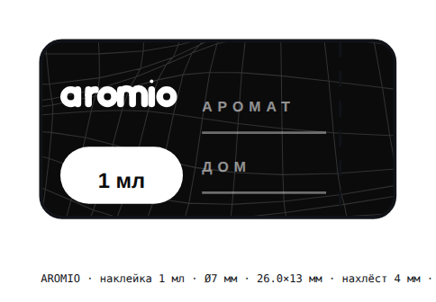
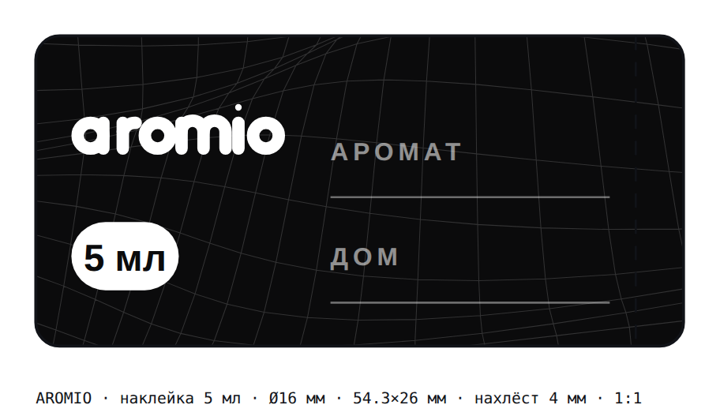
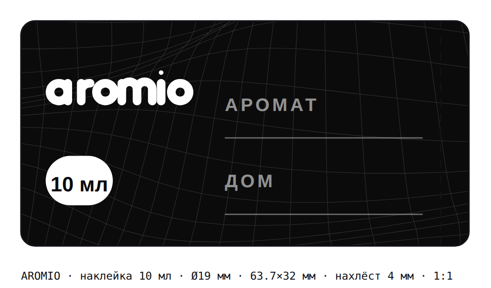

Упаковка декантов · макеты под печать
Пробники 1, 5 и 10 мл, которые уже продаются на витрине, получили физическую упаковку: коробка с заправляемым торцом, наклейка на флакон и поля, которые магазин заполняет при розливе. Всё взято с сайта буквально: та же складчатая сетка фона, тот же векторный знак, та же белая пилюля с объёмом.
Развёртки
Straight tuck end — заправляемый торец сверху и снизу, клеевой клапан слева, пылевые клапаны на боках. Файлы в SVG и PDF, размер страницы равен листу с вылетом, печатать без масштабирования.



Что на какой грани
Знак, PARFUM'S, пилюля с объёмом, слово «декант» и строка «розлив из оригинального флакона».
Поля под аромат, дом, число пшиков и дату розлива. Ниже — предупреждение о спирте и кто разлил. На 5 и 10 мл есть место под штрихкод.
Одна строка вдоль высоты: AROMIO · объём · ДЕКАНТ. На узкой коробке кегль уменьшается сам.
Обёртка на сам флакон: знак, пилюля объёма и те же два поля. Ширина равна длине окружности плюс 4 мм нахлёста.



Откуда что взято
Это не «в похожем стиле» — три элемента перенесены из исходников сайта как есть.
Поле высот из Backdrop.tsx — те же три синуса и та же степень перспективы. На развёртке она идёт сквозным полотном, поэтому на собранной коробке складки обходят её кругом без стыка.
Контур из Wordmark.tsx, кривые один в один. Не шрифт — в типографии без Nunito он не превратится во что-то другое.
Белая пилюля с объёмом — тот же приём, что у кнопок и чипов на сайте. Свет сверху лицевой панели повторяет градиент плашки товара.
В типографию
| Объём | Коробка, мм | Флакон | Лист с вылетом, мм | Наклейка, мм |
|---|---|---|---|---|
| 1 мл | 14 × 14 × 52 | капля Ø7 × 45 | 70 × 81 | 26 × 13 |
| 5 мл | 20 × 20 × 78 | спрей Ø16 × 72 | 94 × 117 | 54 × 26 |
| 10 мл | 24 × 24 × 94 | спрей Ø19 × 88 | 110 × 139 | 64 × 32 |
Картон 300–350 г/м², печать 1+0 чёрным по всей площади корпуса, клеевой клапан оставлен белым — по краске экономнее и клей держит лучше. Линии сетки тонкие: 0,09 мм. Если типография работает офсетом и просит минимум 0,1 мм, скажите — подниму толщину в генераторе одной строкой.
Это упаковка декантов, а не оригинальная коробка дома. На макете нет ни одного чужого логотипа: название аромата и дома вписывается как текст в поле, а на спинке стоит строка «Аромат разлит из оригинального флакона. Упаковка и розлив — AROMIO».
Число пшиков на коробке — поле, а не напечатанное обещание: у парфюма это 2–3, у парфюмерной воды 3–4, у туалетной 4–6, и печатать одно число на всех значило бы врать на двух третях тиража. Поле под штрихкод пустое — номер выдавать нельзя, его получают в GS1.